Chapter 9 · Part 2 — Ouch!
“I stepped on something.” Annie bent down to rub her foot.
“What?” said Jack. “A shell?”
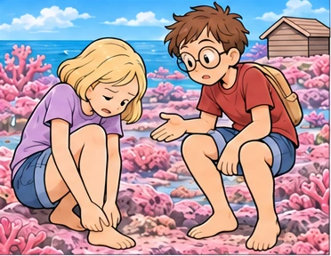
“Yeah, this … ” She picked up a large gray shell. “Boy, is it rough. Rough and gray as a rock—”
“And plain as plain can be!” Jack. They had found the answer.
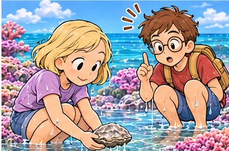
The shell looked like a clamshell—only bigger and with more ridges.
“How could this ugly shell be the answer to the ?” said Annie. “What about the part that says, ‘There’s great beauty in me’?”
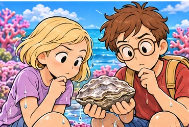
“Wait—,” said Jack. He opened the book.
The pages were stuck together. But he was able to turn a few.
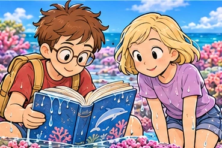
He found a picture of the gray shell. He read:
Divers search for oysters in deep water. But sometimes oysters wash up on reefs or beaches. Inside some oysters you can find a . The ’s natural beauty makes it a treasure.
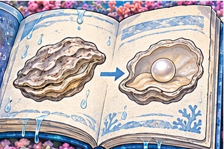
“It must have a inside it!” said Jack.
Annie peered into the between the two halves of the shell. “I can’t see anything,” she said. “How does a get in there, anyway?”
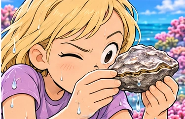
Jack read aloud from the wet page:
Sometimes a grain of sand will get between the oyster’s shell and its skin. This irritates the oyster. So it makes a pearly material to surround the grain of sand. In this way, over a few years, a is formed.
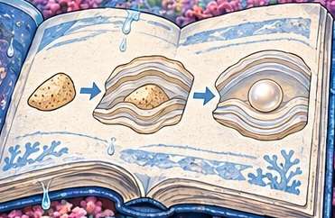
“I can’t tell if there’s a in there or not,” said Annie.
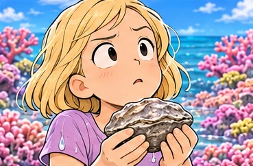
“Maybe we should bang it against a rock,” said Jack.
“Now that would really irritate the oyster,” said Annie.
“Yeah.”
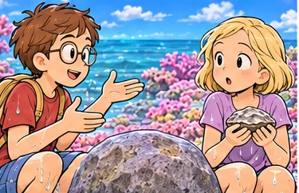
“Maybe we should just leave it alone,” said Annie.
She gently put the oyster back in the water.
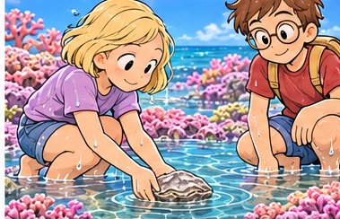
“But how will we know if oyster is the right answer to the ?” said Jack.
“Morgan said we’ll know,” said Annie. “Come on.”
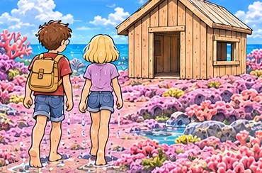
Jack pushed his glasses into place. Then he and Annie picked up their shoes and socks.
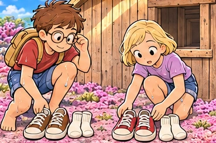
They through the window of the tree house.
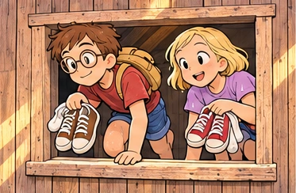
Morgan’s scroll was lying on the floor.
It was open.
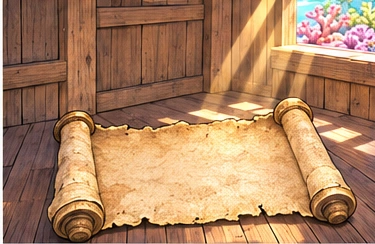
“Look!” said Annie.
She and Jack at the scroll. The had faded away.
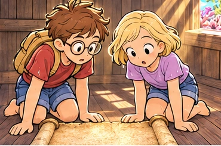
In its place was one shimmering silver word:
OYSTER
“Morgan’s magic,” Annie.
Jack let out a huge sigh. “We got it right,” he said.
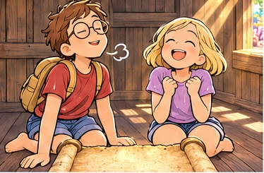
“And here’s the Pennsylvania book,” said Annie. “Let’s go home.”
She opened the book. She to a picture of the Frog Creek woods.
“I wish we could go there!” she said.
The wind started to blow.
The tree house started to spin.
The wind blew harder and harder.
Then everything was still.
Absolutely still.